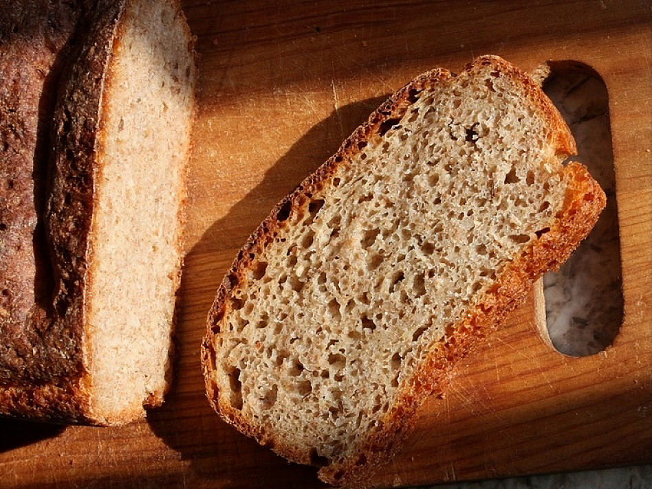

Photo gallery
2020.10.29 09:33



- Keto Duona - ketogenine
Klaipėdos duona, duonos gaminiai, sausainiai, tamsi duona, ruginė duona. - Joniškio duona - šeimos duonkepių tradicijos. Joniškis
Minkšta naminė duona be raugo, mielių, kepimo miltelių ar sodos Ruginė duona be minkymo Greita pasukų duona su sėklomis Skanučiai ruginiai duoniukai be mielių Salyklinė juoda duona be mielių Naminis raugas duonai - su kefyru, tad išrūgsta daug greičiau! ... - Lietuviškos duonos kepimo tradicijos - Klaipėdos duona
Juoda duona – lietuvio pagrindinis maistas nuo seno 🙂 Nors retai ją valgau, kartais užeina noras pasigamint pačiai. Pamenu kad gyvendama Lietuvoje visad pirkdavau grūdėtą ”Rugelio” duoną iš turgaus – kokia skani būdavo! Atėjus sveikos gyvensenos madai ir poreikiui duonos atsisakiau, bet numetus itin daug svorio nusprendžiau grįžt prie duonos […] - DUONA - Maistotaksi.lt
RIEŠUTŲ DUONA Apysakos ir apsakymai Riešutų duona [...] Kaminskas sėdi kabinoje, o Peliūkštis viršuj, tarp spintų, veidrodžių ir puodų įsitaisęs ant sofos su dviem elektros lemputėm rankose. Tėvas praveria kambario duris ir susijaudinęs sako: – Ten ji, Kaminskaitė, tavęs laukia. – Žinau... – sumurmu. - Duonos kepykla | lasuduona.lt
tamsi duona su grŪdais (ketvirtis kepalo) €2.25. ruginĖ viso grŪdo becukrĖ ir bemielĖ duona (ketvirtis kepalo) nuo €2.30. daugiau. provanso duona (Šaldyta) (vnt.) €1.50. provanso duona. €1.50. naminĖ duona be mieliŲ (ketvirtis kepalo) €1.90. kanapinĖ duona (ketvirtis kepalo) ... - DUONA - E-gulbelė
Ir stebuklas pavirto duona. Buvo namai. Stovėjo stalas. Paskutiniai atėjo Knyga ir kryžius Į krikštasuolės kertę. Jeigu esi Dievo sūnus, Dabar viską atpirk. LIETUVIŠKASIS EMAUS Skaudžiai pamuštos jau kojos, Ir kelionėje praalkai, Vakarop saulelė gula – Pasilik pas mus. - Saulius Šaltenis. Riešutų duona.LHM200
Vieną didžiausių šalies kepyklų „Biržų duona“ susitelkti į tvarios veiklos kūrimą paskatino įmonės vertybės ir noras kurti socialiai atsakingą verslą. Saulę „sekiojantys“ moduliai šiuo metu bendrovei pagamina 40 proc. reikalingo elektros kiekio. Planuose yra iš atsinaujinančių energijos šaltinių patenkinti visus 100 proc., todėl svarstoma ateityje įsirengti ir ... - Kazys Bradūnas. Eilėraščiai.LH4800
Klasikinė skrudinimo duona TOSTE, raikyta, 500 g. Kaina 1,25 EUR. Peržiūrėti prek ... - „Biržų duona”: įdarbinusi saulę, svarsto pažaboti ir vėją ...
Duona. Produktas, be kurio daugumai mūsų būtų labai sunku. Kai pusantrų metų turėjau griežtai vengti gliuteno, būtent duonos man trūko labiausiai. Per tą laikotarpį išbandžiau daug įvairių receptų, iki šiol pats sėkmingiausias jų buvo žaliųjų grikių ir sėklų duona, kurios receptas yra AML knygoje. - Duona - BARBORA
duona - patiekalai, kuriuos nesunkiai pasigaminsite pagal pateiktus receptus. Daug gerų, išbandytų receptų, kuriuos turi išmėginti!